지금까지 Lex 를 활용한 Machine Learning 기반의 콜센터를 구축해봤습니다. 이제부터는 조금 더 응용된 시나리오를 구성해보겠습니다. IVR 시나리오를 Contact flow 에서 직접 작성해보고 잘 작동하는지 확인합니다. 이번 장에서는 Callback 시나리오를 구성해보겠습니다. Callback 시나리오 내용은 다음 링크 https://docs.aws.amazon.com/connect/latest/adminguide/setup-queued-callback.html 에도 자세히 설명되어 있습니다.
Connect 콘솔로 접속하여 ConnectIMD6 를 편집합니다. 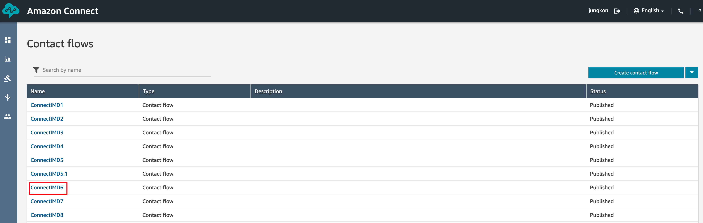
아래 시나리오를 작성합니다. 각각의 Command Block 설정은 아래 설명을 참고하여 작성합니다. 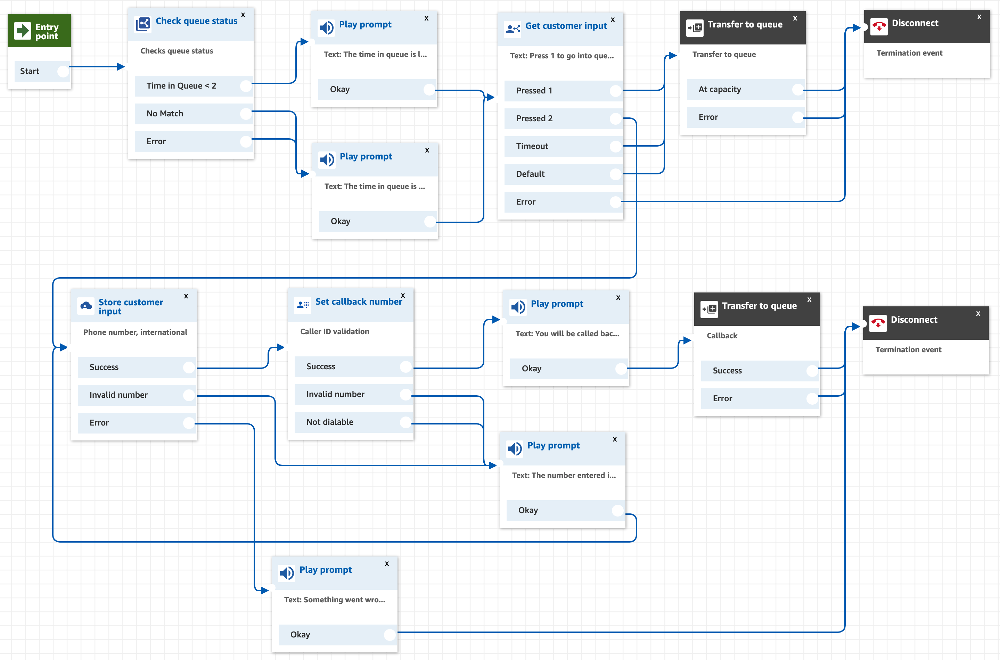
Check queue status Command Block 을 왼쪽 리스트 중 Branch 메뉴에서 Drag&Drop 으로 편집 화면으로 가져옵니다. 아래와 같이 설정한 후, Save 버튼을 클릭하여 설정을 저장합니다. Time in Queue 는 Check queue status 이전에 Set queue 로 설정한 Queue 내에서 가장 오래된 호의 대기 시간을 의미합니다. 따라서 여기에서는 가장 오래 대기한 호가 2분 이상을 기다렸는지 여부에 따라 분기를 할 수 있습니다. 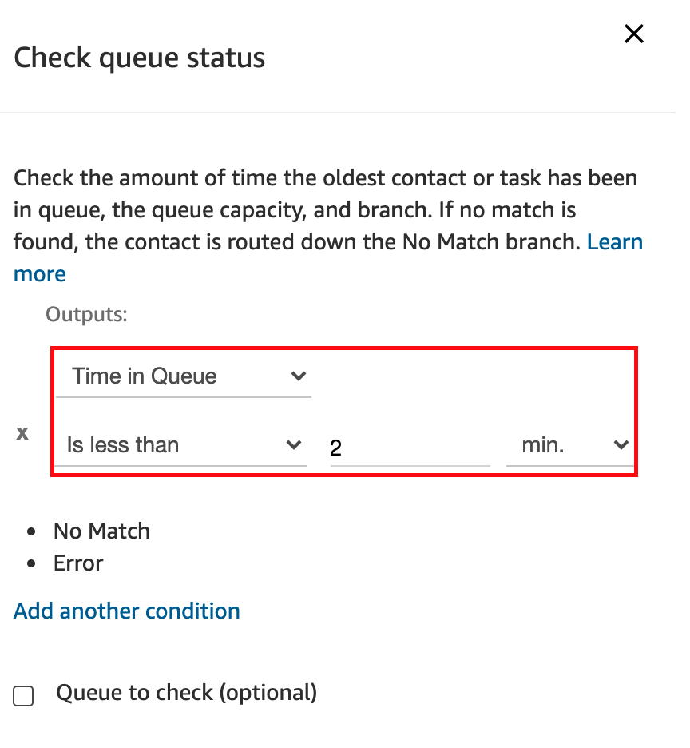
Play prompt Command Block 을 왼쪽 리스트 중 Interact 메뉴에서 Drag&Drop 으로 편집 화면으로 가져옵니다. 아래 Text 를 복사해서 입력합니다. Save 버튼을 클릭하여 설정을 저장합니다.
The time in queue is less than 2 minutes.
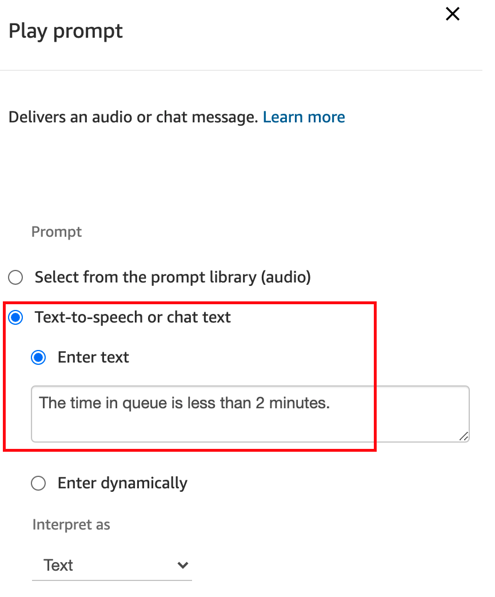
Play prompt Command Block 을 왼쪽 리스트 중 Interact 메뉴에서 Drag&Drop 으로 편집 화면으로 가져옵니다. 아래 Text 를 복사해서 입력합니다. Save 버튼을 클릭하여 설정을 저장합니다.
The time in queue is more than 2 minutes.
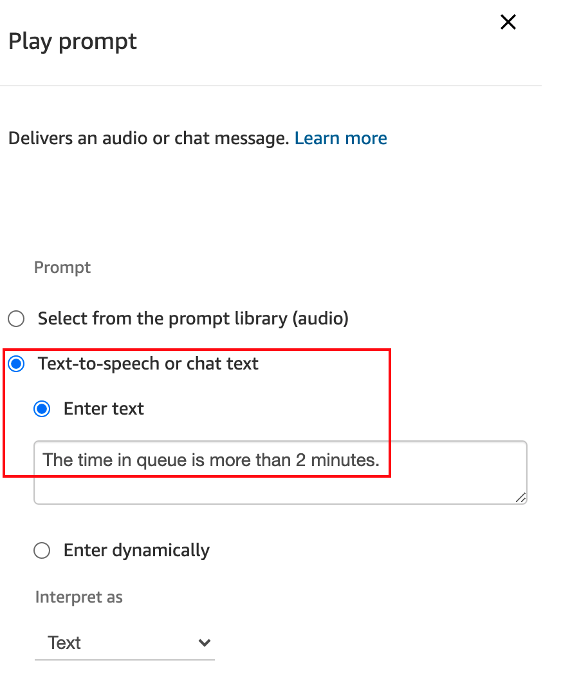
Get customer input Command Block 을 왼쪽 리스트 중 Interact 메뉴에서 Drag&Drop 으로 편집 화면으로 가져옵니다. 아래와 같이 설정한 이후 Save 버튼을 클릭하여 설정을 저장합니다. 앞에서 설정한 Check queue status 를 통해 특정 시간이 지나도록 대기한 호의 경우에는 Callback 번호를 남기도록 유도하기 위해 분기를 별도로 처리할 수 있습니다. 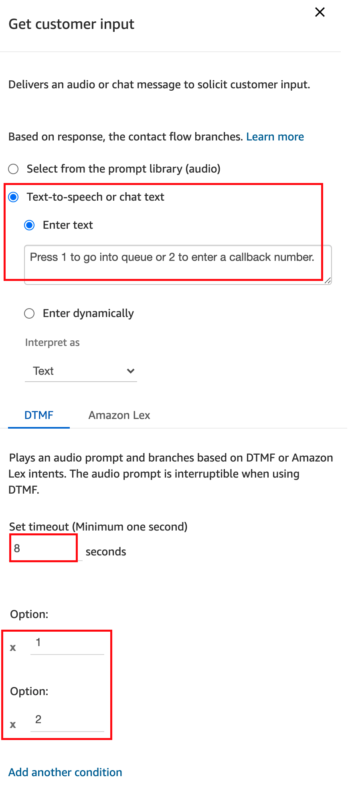
위와 같은 Callback 유도는 Customer queue flow 에서 정의하면 더 자연스럽게 처리할 수 있습니다. Customer queue flow 는 Queue 에서 고객이 대기할 때의 시나리오를 정의할 수 있습니다. 자세한 내용은 다음 링크 https://docs.aws.amazon.com/connect/latest/adminguide/set-customer-queue-flow.html 를 참고하세요.
Transfer to queue Command Block 을 왼쪽 리스트 중 Terminate / Transfer 메뉴에서 Drag&Drop 으로 편집 화면으로 가져옵니다. Save 버튼을 클릭하여 설정을 저장합니다. 앞단계의 Get customer input 에서 1번 분기를 선택하여 계속 대기하기를 선택한 호를 위한 분기입니다. 특별히 편집할 내용은 없지만, Transfer to callback queue 와 구분해야한다는 점은 숙지하시기 바랍니다. 여기에서는 이전에 설명한대로, 대기한 고객의 인입 호를 실제 대기열에서 대기하도록 합니다. 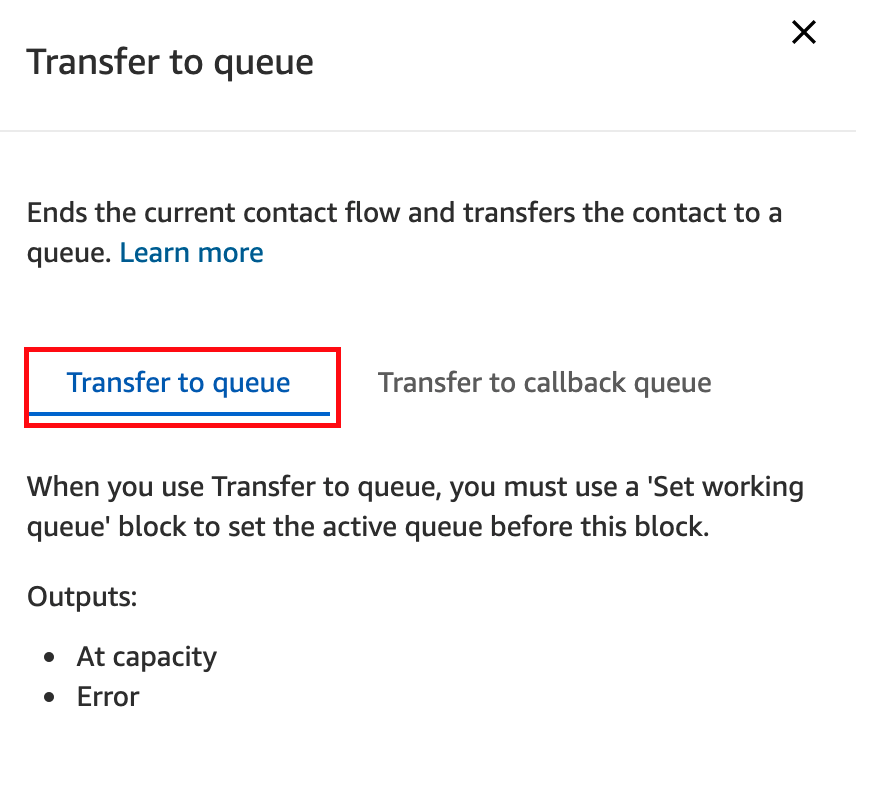
Store customer input Command Block 을 왼쪽 리스트 중 Interact 메뉴에서 Drag&Drop 으로 편집 화면으로 가져옵니다. Text는 아래를 복사하여 붙여넣습니다. 아래와 같이 설정한 이후 Save 버튼을 클릭하여 설정을 저장합니다. 앞단계의 Get customer input 에서 2번 분기를 선택하여 Callback 번호를 남기기를 선택한 호를 위한 분기입니다. 전화번호를 입력받기 위해 아래와 같이 설정합니다. 여기에서는 E.164 포멧으로 전화번호를 받을 수 있도록 설정했습니다.
Enter the number you would like to be called back at.
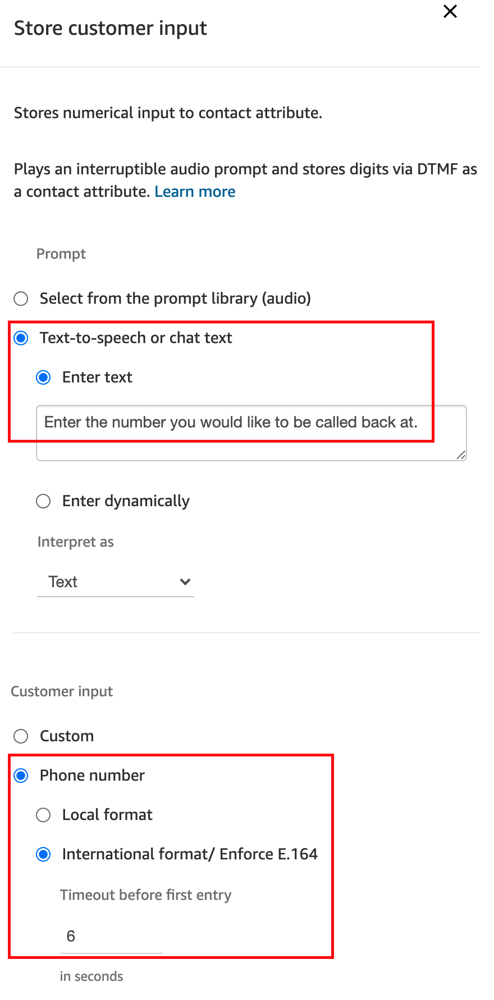
E.164 는 전화번호를 정의한 국제 표준입니다. 자세한 내용은 다음 링크 https://en.wikipedia.org/wiki/E.164 를 참고하시기 바랍니다. 예를 들어 010-1234-5678 은 E.164포멧으로는 +821012345678 입니다.
Set callback number Command Block 을 왼쪽 리스트 중 Set 메뉴에서 Drag&Drop 으로 편집 화면으로 가져옵니다. 아래와 같이 설정한 이후 Save 버튼을 클릭하여 설정을 저장합니다. 앞에서 Store customer input 에서 입력받은 전화번호를 Callback 넘버로 지정합니다. 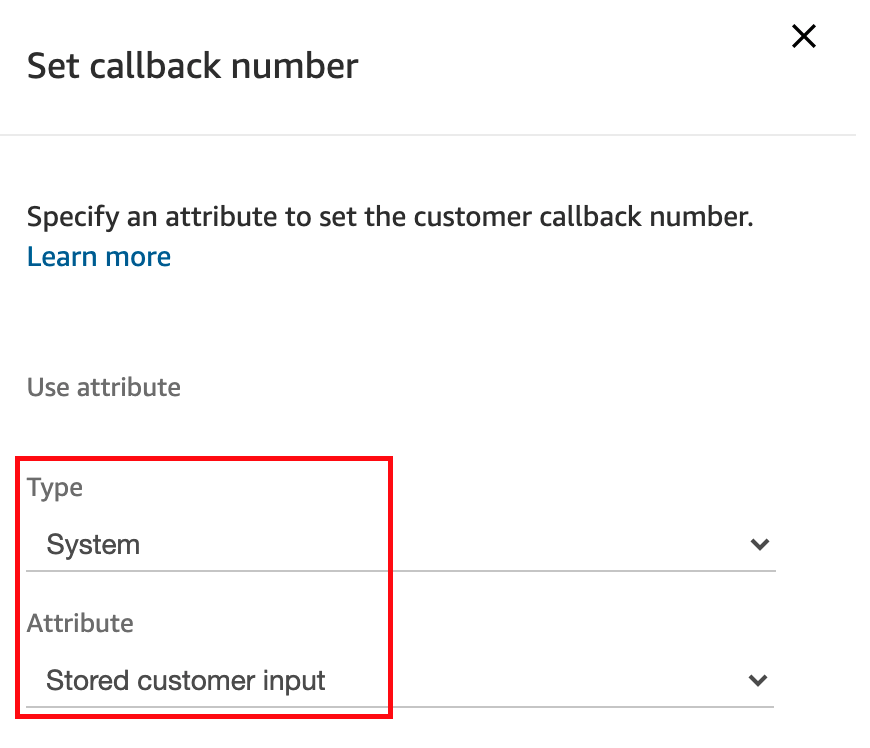
Play prompt Command Block 을 왼쪽 리스트 중 Interact 메뉴에서 Drag&Drop 으로 편집 화면으로 가져옵니다. 아래 Text 를 복사해서 입력합니다. Save 버튼을 클릭하여 설정을 저장합니다. Callback 을 선택하고 전화번호를 정상으로 입력한 고객에게 안내 멘트를 들려줍니다.
You will be called back soon.
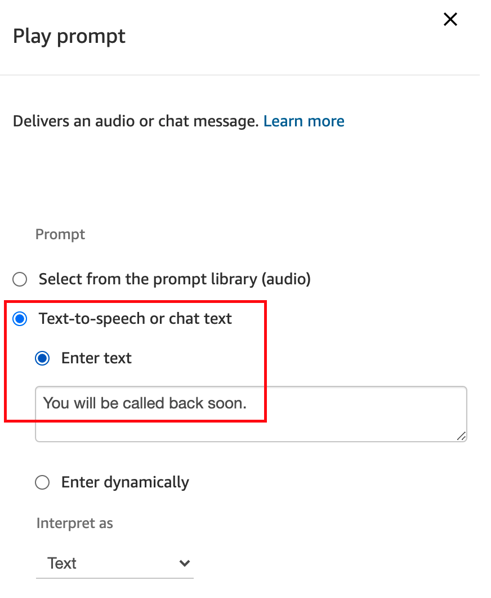
Play prompt Command Block 을 왼쪽 리스트 중 Interact 메뉴에서 Drag&Drop 으로 편집 화면으로 가져옵니다. 아래 Text 를 복사해서 입력합니다. Save 버튼을 클릭하여 설정을 저장합니다. 위 8번 과정에서 고객이 번호를 잘못 입력했다면 반복해서 번호를 제대로 입력할 수 있도록 안내 멘트를 들려줍니다.
The number entered is not valid. Please input again.
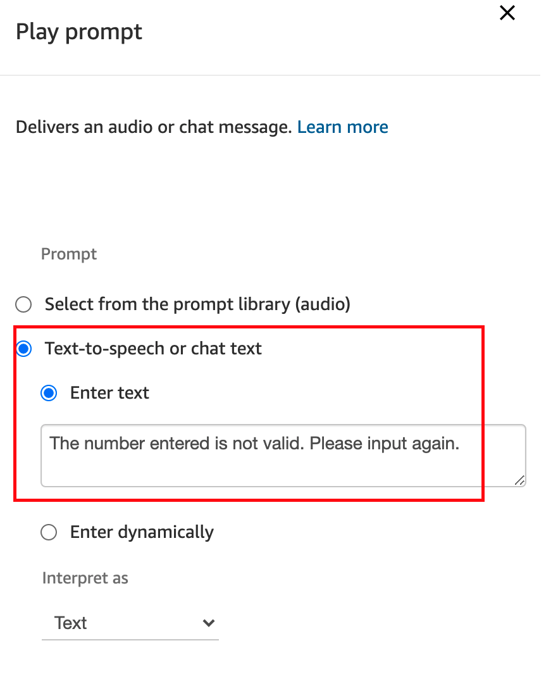
Transfer to queue Command Block 을 왼쪽 리스트 중 Terminate / Transfer 메뉴에서 Drag&Drop 으로 편집 화면으로 가져옵니다. 아래 화면과 같이 설정합니다. Save 버튼을 클릭하여 설정을 저장합니다. 여기에서는 Callback queue 에서 대기하게 하며, Initial delay, Retry 규칙을 정의할 수 있습니다. 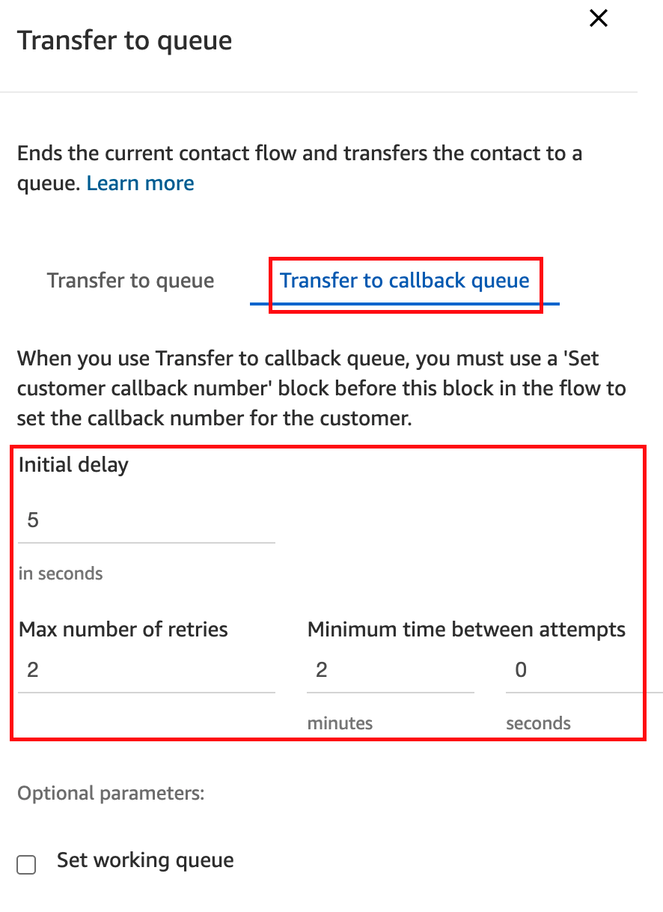
Play prompt Command Block 을 왼쪽 리스트 중 Interact 메뉴에서 Drag&Drop 으로 편집 화면으로 가져옵니다. 아래 Text 를 복사해서 입력합니다. Save 버튼을 클릭하여 설정을 저장합니다. 위 8번의 과정에서 오류가 발생한 경우 아래 멘트를 들려줍니다.
Something went wrong. Bye.
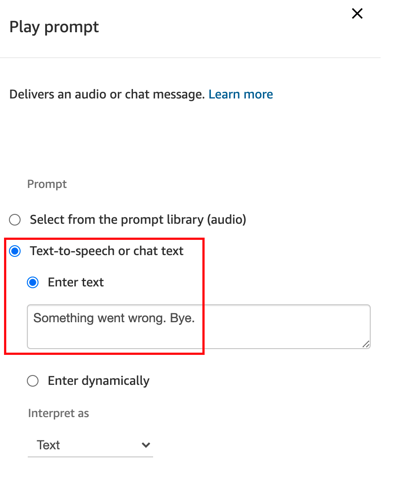
모든 시나리오를 작성했으면, Save 하고 Publish 를 합니다. DTMF 로 진입했을 경우에는 2번 Inquiry 분기를 선택한 경우, Amazon Lex로 진힙했을 경우 Inquiry Intent 로 인식했을 경우, 이 Contact flow 로 분기됩니다. 2번을 선택하여 테스트를 진행해보고 잘 작동하는지 확인합니다.
Callback 과 관련된 시나리오를 모두 작성하였습니다.